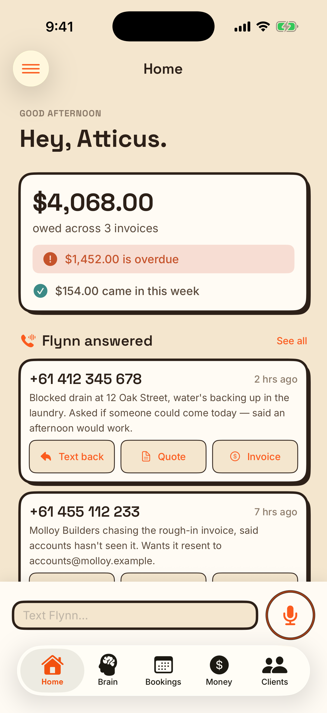
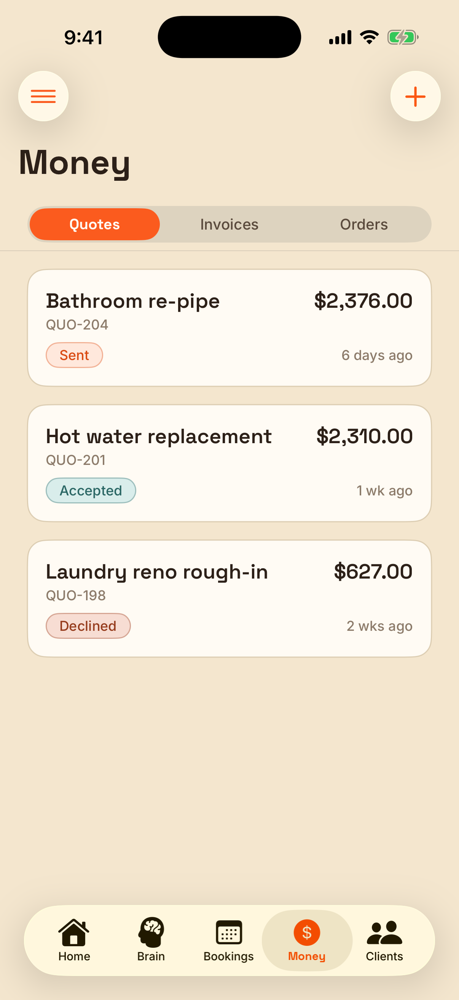
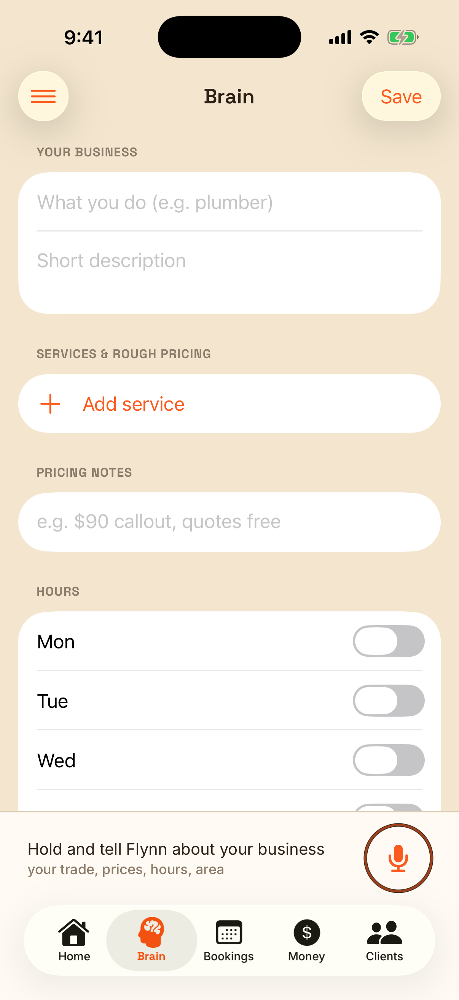
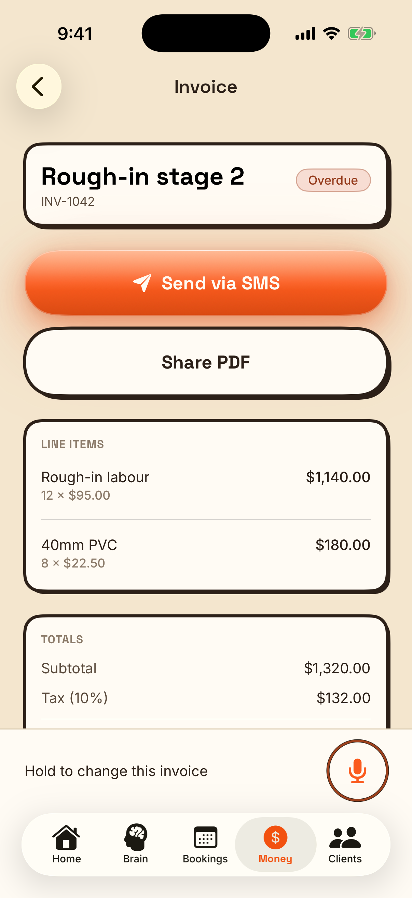
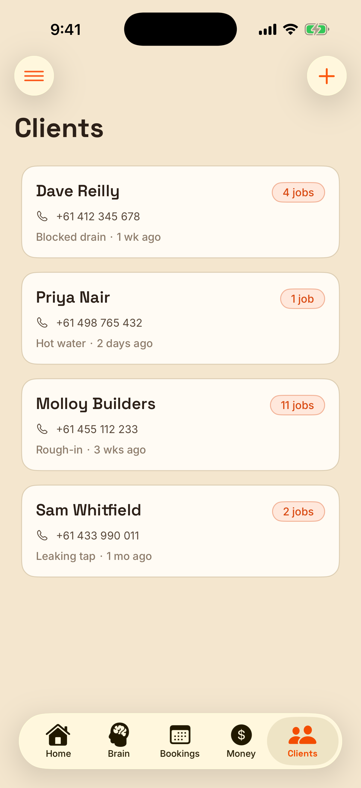

Flynn answers the calls you can't take, works out what they need, and books them in.

Every unpaid invoice, front and centre. Flynn chases them so you don't have to.

Your trade, your prices, your hours — tell Flynn once out loud. No forms.

Speak the job, Flynn writes the invoice and texts them a link to pay it.

Quotes, invoices, bookings and customers — no spreadsheet, no shoebox.
